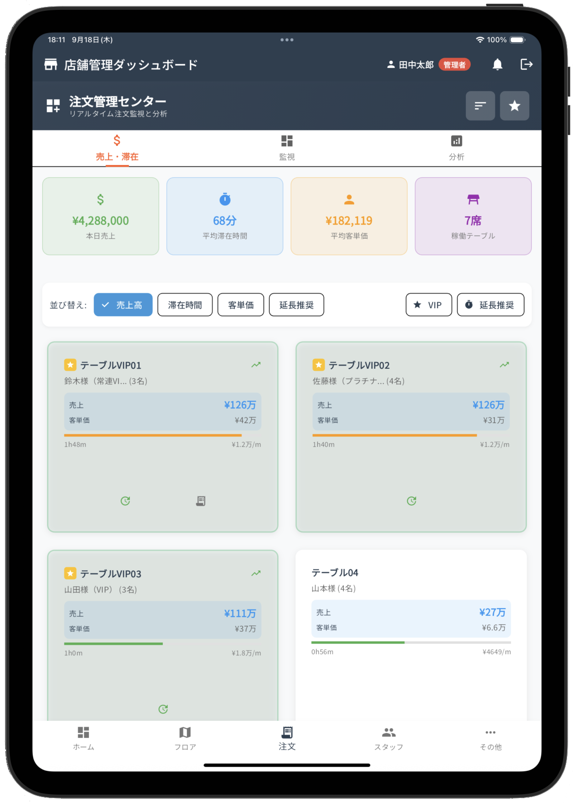

日々の店舗運営、
こんな「お悩み」ありませんか？
一つでも当てはまれば、それは大きな機会損失のサインかもしれません。
❌ 無駄な動き
裏のホワイトボードまで走って確認。お客様を待たせ、貴重な接客時間を失っています。
❌ 伝票のミス
オーダーや会計のミスは、お客様からの信頼を失い、クレームや売上ロスの原因になります。
❌ 情報共有の遅れ
優秀な黒服のノウハウが共有されず、接客の質にバラつきが。ヘルプのタイミングも逃しがちです。
❌ スタッフのストレス
理不尽な情報伝達ミスでの叱責。モチベーション低下はサービスの質の低下と離職に繋がります。
そのお悩みをスマートに解決
FEATURE 01
リアルタイム・フロアマップ
「どのテーブルが空いているか」「誰がどの席についているか」「ヘルプが必要な席はどこか」が一目瞭然。裏のホワイトボードはもう必要ありません。

FEATURE 02
スマート・オーダーエントリー
オーダー入力、会計処理、ヘルプ要請もワンタップ。ミスなく、スマートで質の高い接客を実現し、顧客満足度を向上させます。


FEATURE 03
テーブル状況の可視化
利用時間や会計金額をリアルタイムで一覧管理。的確なタイミングでのサービス提供や、スマートな延長交渉が可能になります。

導入で期待できる「３つの効果」
📈 売上向上
- 顧客満足度UP
- 客単価UP
- 機会損失の防止
💸 コスト削減
- 人件費の最適化
- 教育コスト削減
- ミス・不正防止
🤝 組織力強化
- 離職率の低下
- チームワーク向上
- 働きやすい環境作り
まずは「お試し導入」から
始めてみませんか？
「いきなり本格的な導入は不安...」というお声にお応えします。
まずは店舗でシステムを実際に使い、その効果を直接ご体感ください。
貴店に最適なプランを、一緒に作り上げましょう。